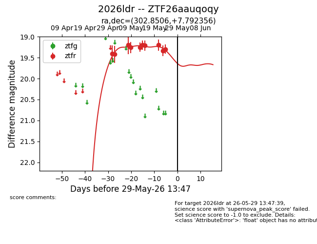
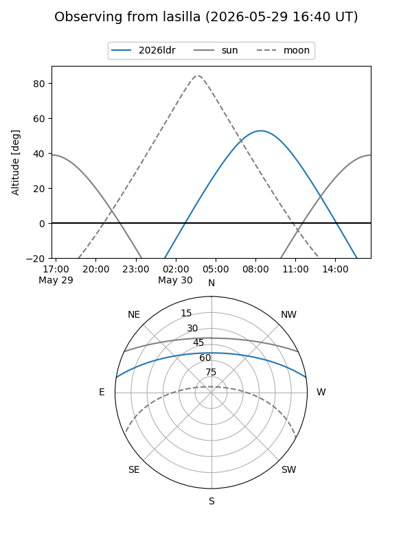
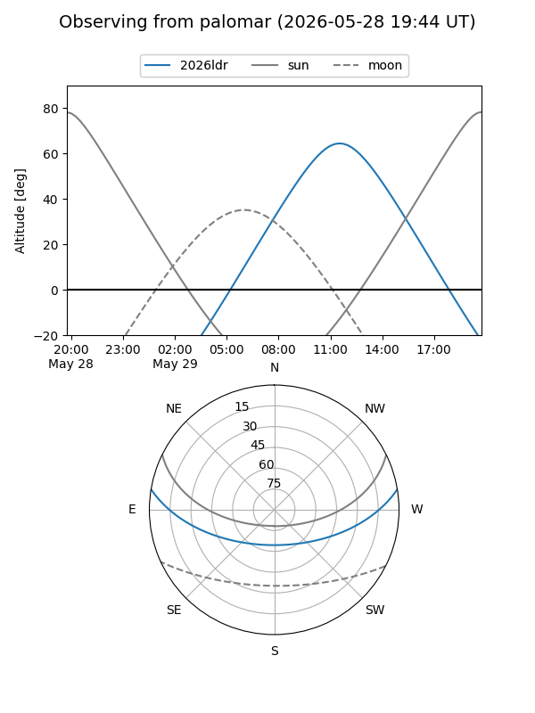
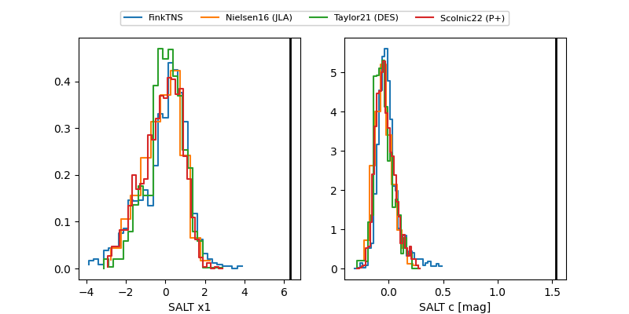

2026ldr
Target 2026ldr at 2026-05-29 13:55
Aliases and brokers:
lsst-FINK: link
lsst-Lasair: link
lsst-ALeRCE: link
ztf-FINK: link
ztf-Lasair: link
ztf-ALeRCE: link
TNS: link
YSE: link
alt names
ZTF26aauqoqy (ztf,fink_ztf)
2026ldr (tns,yse)
Coordinates:
equatorial (ra, dec) = 302.8506,+7.79236
equatorial (HMS+DMS) = 20:11:24.15,+07:47:32.48
galactic (l, b) = (49.3936,-13.86479)
Flags:
TNS confirmed: nan
Photometry:
last ztfr=19.30
10 ztfr detections
Lightcurve

Visibility


Additional plots
